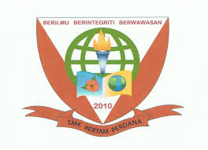

My education
I'm a final-year student in Diploma in Information Management at UiTM Kedah. It's been an exciting journey where I've learned about managing information systems, databases, and even the art of cataloging. Before that, I graduated from SMK Bertam Perdana, which laid the groundwork for my academic journey. My education has always been more than just grades—it's about discovering my passion and preparing for the future.
| Year | Institution | Degree | Remarks |
|---|---|---|---|
| 2022 - Present | UiTM Kedah
|
Diploma in Information Management | Diploma Progress |
| 2017 - 2021 | SMK Bertam Perdana  |
SPM PT3 |
Graduated with Distinction |